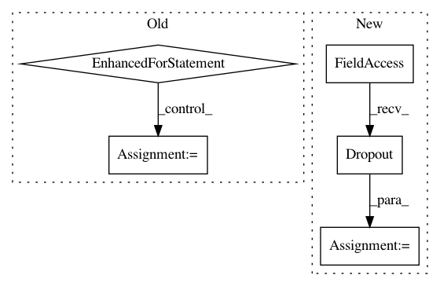

509453992838a524f6442d4e0f07a034390ae1f7,layers/eight_mile/tf/layers.py,ConvEncoderStack,__init__,#ConvEncoderStack#Any#Any#Any#Any#Any#Any#,171
Before Change
first_layer = ConvEncoder(insz, outsz, filtsz, pdrop, activation)
self.layers.append(first_layer)
for i in range(layers - 1):
subsequent_layer = ResidualBlock(ConvEncoder(insz, outsz, filtsz, pdrop, activation))
self.layers.append(subsequent_layer)
def call(self, x):
for layer in self.layers:
x = layer(x)
return x
After Change
self.output_dim = outsz
self.conv = tf.keras.layers.Conv1D(filters=outsz, kernel_size=filtsz, padding="same")
self.act = get_activation(activation)
self.dropout = tf.keras.layers.Dropout(pdrop)
def call(self, inputs):
conv_out = self.act(self.conv(inputs))
return self.dropout(conv_out, TRAIN_FLAG())
In pattern: SUPERPATTERN
Frequency: 3
Non-data size: 5
Instances
Project Name: dpressel/mead-baseline
Commit Name: 509453992838a524f6442d4e0f07a034390ae1f7
Time: 2020-02-13
Author: dpressel@gmail.com
File Name: layers/eight_mile/tf/layers.py
Class Name: ConvEncoderStack
Method Name: __init__
Project Name: eriklindernoren/PyTorch-GAN
Commit Name: a4697d7e45e66a3264eb56dcf489d67d4df40d23
Time: 2018-04-23
Author: eriklindernoren@gmail.com
File Name: implementations/cgan/cgan.py
Class Name: Discriminator
Method Name: __init__
Project Name: dmlc/dgl
Commit Name: 6f4898a128ebc5227e312640508629b50b32571b
Time: 2018-12-02
Author: yma@yma.io
File Name: examples/mxnet/gcn/gcn_batch.py
Class Name: GCN
Method Name: forward